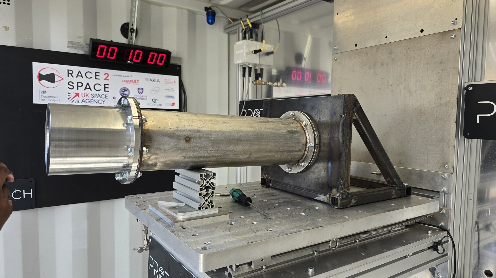
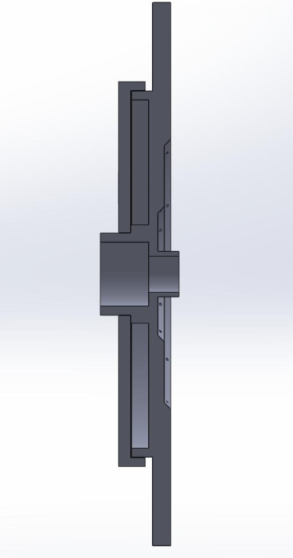

Five-person MEng capstone · 2024–2025
600 N Hybrid Rocket Engine
Our five-person student team set out to design, manufacture and attempt a static hot fire of an N₂O/HDPE hybrid rocket engine. The common design basis was a 600 N thrust target, five-second nominal burn, oxidiser-to-fuel ratio of 7 and approximately 33 bar target chamber pressure. These were assumptions and targets, not achieved performance.
Read the full technical case study →
Outcome and its limits
The assembled engine ignited during the attempted hot fire, but leakage at the injector–chamber interface prevented target pressure and sustained combustion. The team’s post-test assessment linked the leak to flange distortion during welding. The attempt demonstrated ignition and exposed a critical integration failure; it did not establish successful engine operation or the target thrust.
My contribution
My principal responsibility was the oxidiser injector, from literature review and concept selection through analytical sizing, CFD, SolidWorks CAD, design for manufacture and integration. I also contributed to shared engine sizing using MATLAB and NASA CEA and performed initial nozzle calculations; detailed nozzle development belonged to another team member. Manufacture and system integration were collaborative activities, rather than individual ownership of the entire engine.
Design decisions
The injector progressed from an early concentric swirl concept through a showerhead baseline to a final two-ring impinging arrangement. The selected design used 20 orifices of 1.5 mm diameter. Simplified two-dimensional transient CFD helped compare ring arrangements; the two-ring option balanced predicted behaviour against manufacturing complexity. These comparisons did not verify full three-dimensional, multiphase spray performance.
When the anticipated additive-manufacturing route became unavailable, the injector moved to CNC-machined stainless steel with a welded rear closure. This enabled access to the internal cavity but introduced another potential leak path and distortion risk. The hot-fire result showed why interface flatness and sealing needed the same attention as internal flow geometry.
Lessons and next steps
I would rebuild the verification chain before another hot fire: controlled thermochemical inputs, improved two-phase N₂O sizing, measured cold-flow behaviour, interface inspection and explicit acceptance criteria. An audit found inconsistent N₂O/NO₂ specification in archived CEA runs, so historical calculation files must be interpreted with that limitation. The full report preserves this configuration-control issue, the failure analysis and the manufacturing trade-offs rather than presenting the hardware as a validated design. For me, the key lesson was to treat the pressure-containing assembly, its manufacturing process and its verification evidence as one engineering system, not a collection of separately optimised components.
